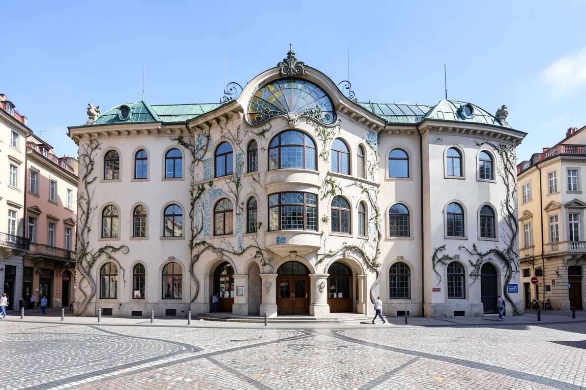

arkitektur · 1890s–1910s · også: Jugendstil, Modernisme, Style Nouille, Stile Liberty
Piskesnertkurver, planteformer og synlig jern i gatefasaden og i trapperommet. Horta i Brussel, Guimard i Paris og Gaudí i Barcelona skapte det totale kunstverket: én linje fra fasaden til dørhåndtaket.

Kjerneidé
En bygning skal vokse som en plante: konstruksjon, ornament og møbler følger én organisk linje, og jern og glass vises som tidens nye materialer.
Designprinsipper
Tegn én sammenhengende linje, en piskesnertkurve, gjennom fasaden, rekkverket, vindussprosene og interiørets innredning.
Vis smijern og glass som konstruksjon: søyler, trappevanger og takribber forblir slanke, 150 til 250mm i tverrsnitt, og står synlige.
Hent ornamentet fra planter, stilker, ranker og insekter, og la det vokse ut av konstruksjonen i stedet for å sitte oppå den.
Del fasaden i asymmetriske fag: fagbredden varierer, og vindusbuene er rundbuede eller kjølbuede, ikke rette.
Tegn hele rommet som ett verk: gulvmosaikk, tak, lampe, balustrade og veggmaling deler ett motiv.
Belys trapperommet ovenfra gjennom et takvindu i glassmaleri, slik at trappen er husets hovedrom.
Antimønstre
Rette, stive ortogonale rutenett som ignorerer kurven
Klassiske ordener, frontoner eller symmetriske portikusfronter
Enkle uornamenterte vegger uten plante- eller linjemotiv
Rå betong eller ubehandlede overflater
Ornament støpt i gips og kjøpt som standardvare, ikke tegnet for bygget
Tunge, mørke fargevalg som skjuler glasset og jernet